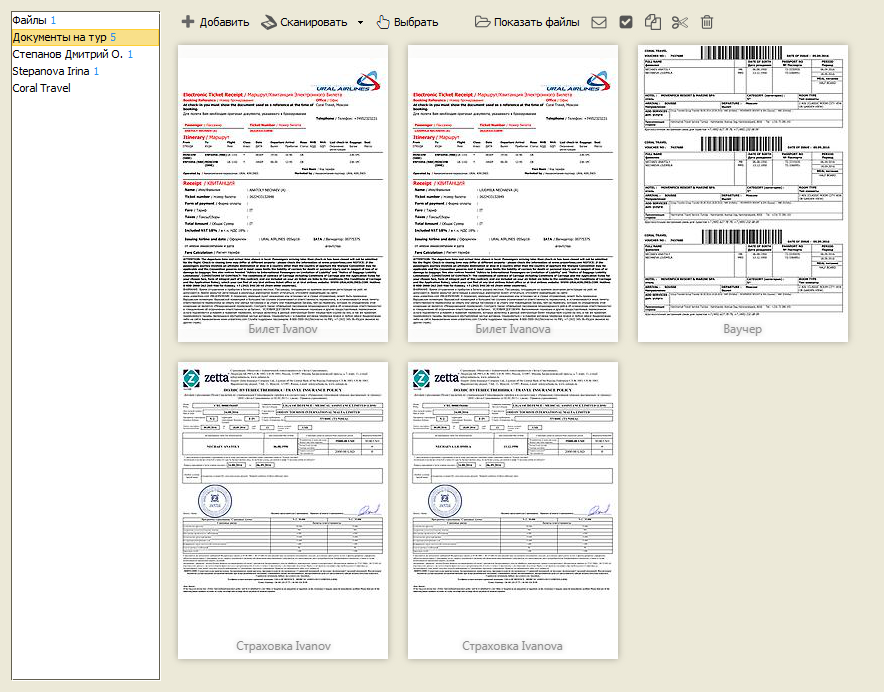
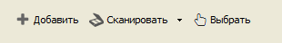
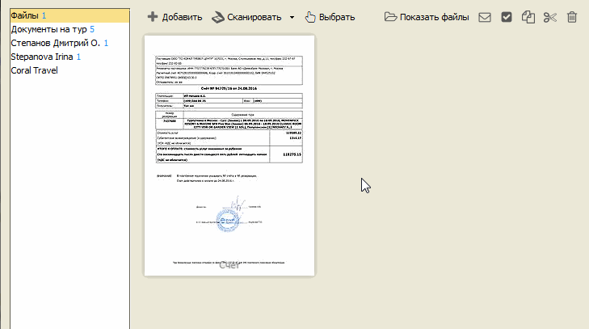
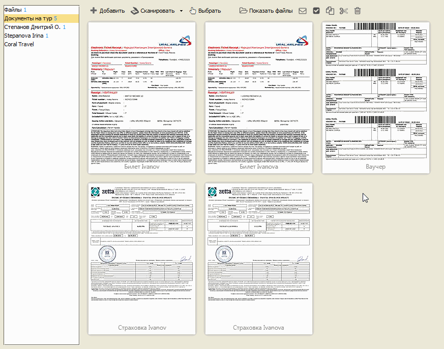
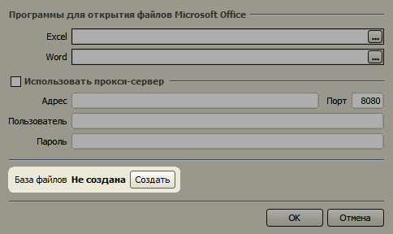
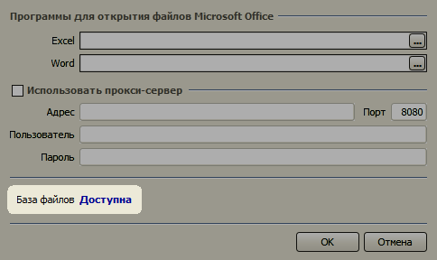
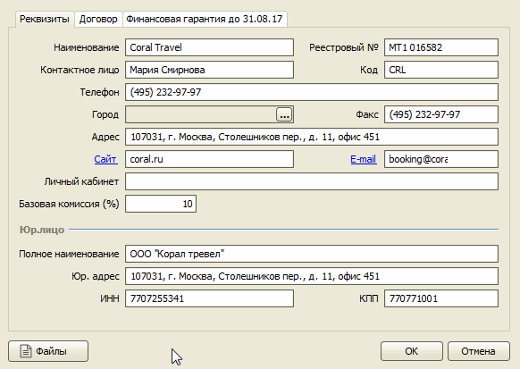
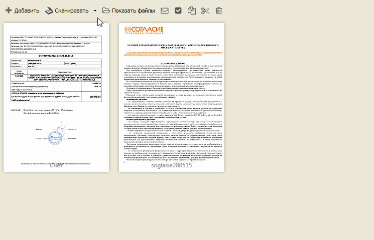
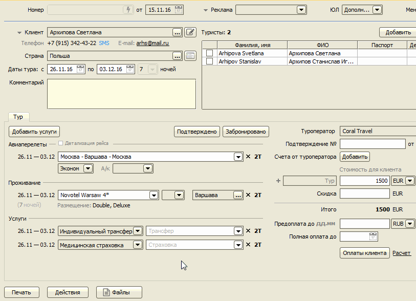

Файлы
Главное меню → Документы → Файлы
Программа позволяет хранить файлы изображений, документы Microsoft Office, PDF-файлы и ZIP-архивы и обмениваться ими между пользователями. Файлы могут быть прикреплены к заявкам, карточкам клиентов, туристов и туроператоров. Например, можно отсканировать страницы договора с туроператором и прикрепить их к карточке туроператора для быстрого доступа, когда нужно уточнить условия договора, такие как штрафы за аннуляцию тура. Можно прикрепить фотографии и сканы паспортов туристов к их карточкам, добавить документы на тур в заявку и т.д.
Для каждого файла (кроме ZIP-архивов) создается миниатюра для удобного обзора списка файлов. Чтобы создавались миниатюры для документов Microsoft Office, необходимо наличие установленного пакета LibreOffice.

Прикрепление файлов
Есть несколько способо прикрепить файл:
1) Выбрать файл, находящийся на диске (кнопка "Добавить"),
2) Перетащить файл,
3) Выбрать файл, который еще не был прикреплен к какой-либо заявке или элементу справочника (кнопка "Выбрать"),
4) Отсканировать документ (кнопка "Сканировать").

Действия с файлами
Действия могут выполняться с одним файлом или с группой выбранных файлов.
Список действий открывается с помощью кнопки , расположенной в правом верхнем углу миниатюры файла. Доступны следущие операции над файлом:
Показать файл,
Отправить по E-mail,
Переименовать,
Удалить.

Для выполнения групповых операций над файлами необходимо сначала выбрать файлы с помощью чекбокса в левом верхнем углу миниатюры, затем нажать одну из кнопок действия. Для группы файлов могут быть выполнены следующие действия:
Показать файлы – выбранные файлы открываются в отдельной папке в Проводнике Windows,
Отправить по E-mail ( ) – выбранные (или все) файлы открываются в почтовом клиенте,
Инвертировать выделение файлов ( ),
Копировать файлы ( ),
Вырезать файлы ( ),
Вставить файлы (
 ),
),Удалить ( ).

Общее хранилище файлов
Для многопользовательской версии
При добавлении файла в заявку (и в справочники) создается копия файла, которая хранится во внутренней папке программы на диске компьютера, на котором осуществляется добавление файлов. Если открыть заявку на другом компьютере, можно увидеть наличие прикрепленного файла, но сам файл открыть нельзя, т.к. он хранится на другом компьютере.
Чтобы все добавляемые файлы были доступны на всех компьютерах, на которых работает программа, необходимо создать общее хранилище файлов. Для этого нужно войти в программу под пользователем с ролью Администратор, в меню "Настройки" выбрать пункт "Системные настройки". В открывшейся форме отображается статус "База файлов: Не создана".

Нужно нажать кнопку "Создать", ввести пароль SA, который был задан во время установки Microsoft SQL Server, и статус должен изменится на "Доступна". После этого необходимо перезагрузить программу на всех компьютерах и через 5-10 минут любой файл можно будет открыть с любого компьютера, независимо от того на каком компьютере этот файл был загружен.

Сканирование файлов
Функция сканирования доступна при наличии подключенного к компьютеру сканера. Нажатием одной кнопки "Сканировать" запускается процесс сканирования на устройстве, полученный в результате графический файл прикрепляется к текущей заявке (или элементу справочника).

С помощью меню можно выбрать опцию сканирования через специальную форму и определить разрешение картинки.

Если в офисе сканер подключен только к одному компьютеру, можно осуществить сканирование, находясь в общей папке неприкрепленных файлов (пункт "Файлы" в главном меню "Документы"). Пользователь на другом компьютере сможет выбрать отсканированный документ, с помощью кнопки "Выбрать".

Остались вопросы? Напишите нам на e-mail